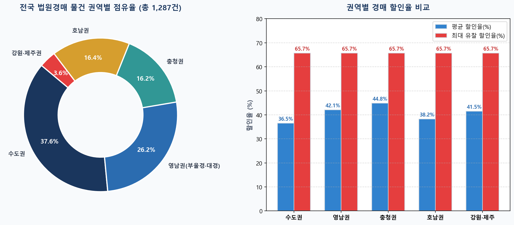
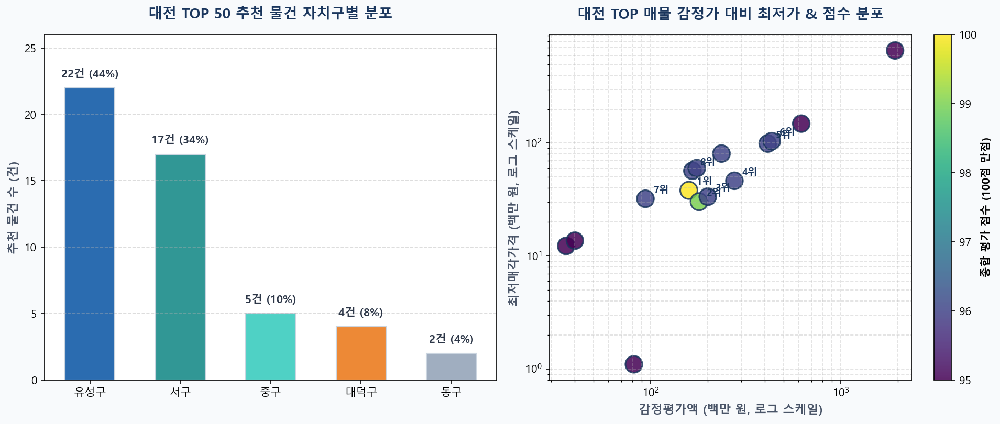

🏢 대한민국 법원 부동산 경매 종합 가이드 및 실시간 분석 보고서
📑 목차 바로가기
1. 부산동경매의 정의 및 특징
‘부산동경매’는 경매 실무에서 주로 부산지방법원 동부지원(약칭: 부산동 / 부산동부)에서 진행되는 법원경매를 의미하며, 문맥에 따라 부산광역시 동구 지역 경매 또는 비철금속 동(구리, 銅) 경매를 가리키기도 합니다.
1.1 부산지방법원 동부지원 경매 (주요 의미)
- 관할 구역 (4개 시·구·군): 해운대구, 수영구, 남구, 기장군
- 법원 소재지: 부산광역시 해운대구 재반로112번길 20 (재송동, 동해선 센텀역 인근)
- 입찰 진행 시간:
- 입찰표 접수: 오전 10:00 ~ 오전 11:20
- 개찰 진행: 오전 11:30 시작
- 시장 및 지역적 특징:
- 해운대구·수영구·남구: 부산 최고의 부촌이자 주거 선호지(마린시티, 센텀시티, 남천동, 광안리, 대연 재개발 등)를 포함하여 아파트·주상복합 물건에 대한 응찰자 수와 낙찰가율이 매우 높습니다.
- 기장군: 정관·일광신도시의 택지지구 아파트와 더불어 오시리아 관광단지 배후 상가, 토지, 임야, 공장 등 도농복합형·투자용 물건이 풍부하게 출회됩니다.
1.2 부산광역시 ‘동구’ 지역 경매
2. 전국 법원경매 응찰 장소 (총 60개 입찰법정)
대한민국 법원 부동산 경매는 현장 방문 입찰이 원칙이며, 해당 부동산 소재지를 관할하는 지방법원 본원 및 지원의 입찰법정에 직접 출석하여 응찰표를 투함해야 합니다. (전국 18개 본원 + 42개 지원 = 총 60개소)
| 권역 | 본원 및 지원 목록 (총 60곳) | 관할 구역 및 주요 지역 |
|---|---|---|
| 서울권 (5) | 서울중앙, 서울동부, 서울서부, 서울남부, 서울북부 | 서울 25개 자치구 분할 관할 |
| 인천·경기북부 (5) | 인천지법 본원, 부천지원, 의정부지법 본원, 고양지원, 남양주지원 | 인천 전역, 김포, 부천, 의정부, 고양, 파주, 남양주, 구리 등 |
| 경기남부 (6) | 수원지법 본원, 성남지원, 여주지원, 평택지원, 안산지원, 안양지원 | 수원, 용인, 화성, 성남, 하남, 평택, 안산, 시흥, 안양 등 |
| 강원권 (5) | 춘천지법 본원, 강릉지원, 원주지원, 속초지원, 영월지원 | 춘천, 강릉, 동해, 삼척, 원주, 속초, 양양, 영월, 태백 등 |
| 대전·세종·충청 (10) | 대전지법 본원, 홍성, 논산, 천안, 공주, 서산지원 / 청주지법 본원, 충주, 제천, 영동지원 | 대전, 세종, 충남 전역(천안·아산·서산 등), 충북 전역(청주·충주 등) |
| 영남권 (19) | 부산 본원, 부산동부, 부산서부 / 울산 본원 / 창원 본원, 마산, 진주, 통영, 밀양, 거창 / 대구 본원, 대구서부, 안동, 경주, 포항, 김천, 상주, 의성, 영덕 | 부산·울산·경남 전역, 대구·경북 전역 |
| 호남·제주권 (10) | 광주 본원, 목포, 장흥, 순천, 해남지원 / 전주 본원, 군산, 정읍, 남원지원 / 제주지법 본원 | 광주·전남 전역, 전북 전역, 제주특별자치도 전역 |
- 본인 응찰: 신분증, 도장(막도장 가능), 입찰보증금(최저매각가격의 10%, 은행 수표 1장 권장)
- 대리인 응찰: 본인 인감증명서(3개월 이내 발급), 인감도장이 날인된 위임장, 대리인 신분증 및 도장, 입찰보증금
3. 국내 주요 경매·공매 사이트 주소 및 활용법
3.1 국가 공식 무료 플랫폼 (100% 필수 열람)
3.2 민간 경매 정보 플랫폼
- 마당스 (madangs.com): 깔끔한 화면과 무료 권리분석 범위가 넓어 입문자에게 추천.
- 밸류맵 (valuemap.co.kr): 토지·건물 실거래가 지도와 법원경매 물건의 지리적 결합 검색.
- 리치고 (richgo.ai): 아파트 시세 예측 AI 알고리즘과 경매 매물 분석.
- 전문 유료 사이트: 지지옥션, 굿옥션, 탱크옥션, 옥션원, 스피드옥션 (등기부·전입세대열람 통합 제공).
4. 경매 물건 선별 5대 지표 및 실전 체크리스트
단순히 유찰 횟수만 보고 싸 보이는 물건을 고르면 큰 낭패를 볼 수 있습니다. 아래 5대 지표를 단계별로 검증해야 합니다.
(유찰 1회 이상, 감정가 괴리 분석)"] --> B["2단계: 권리분석 안전성 검증
(말소기준권리, 선순위 임차인 유무)"] B --> C["3단계: 시장 환금성·경쟁도 조사
(최근 3개월 실거래량, 급매 시세)"] C --> D["4단계: 현장임장 및 부대비용 산정
(공용 관리비, 점유자 명도 협의)"] D --> E["5단계: 안전마진 기반 최종 입찰가 결정
(급매가 - 부대비용 - 목표수익)"]
4.1 5대 지표 세부 기준
- 가격 및 안전마진 지표: 감정평가액은 6개월~2년 전 기준이므로 맹신하지 말고 현재 네이버 부동산 최저 호가(급매가)를 기준으로 안전마진을 계산합니다.
- 권리분석 안전성 지표: 말소기준권리 이후의 모든 채권이 깨끗이 소멸하는지, 대항력 있는 선순위 임차인의 미배당 보증금 인수액이 0원인지 확인합니다.
- 시장 경쟁도 및 환금성 지표: 최근 3~6개월간 매매·전세 거래량이 꾸준한 단지인지, 평균 응찰자 수가 적정한지 봅니다.
- 명도 난이도 및 숨은 비용 지표: 소유자 점유인지, 보증금을 100% 배당받는 임차인인지에 따라 명도 비용과 기간이 결정됩니다. 또한 공용부분 미납 관리비는 낙찰자가 인수해야 하므로 관리소 확인이 필수입니다.
- 물리적·입지 가치: 아파트는 전세가율과 대단지 여부, 상가는 실질 임대수익률(Cap Rate), 토지는 도로 접합(맹지 탈출 가능성)을 체크합니다.
5. 경매의 핵심 엔진: 소멸주의(消滅主義) 심층 분석
소멸주의(消滅主義, 삭제주의)란 법원 경매에서 낙찰자가 매각대금(잔금)을 완납하면, 전 소유자가 졌던 모든 빚과 근저당, 가압류 등의 권리가 낙찰자에게 넘어가지 않고 법원의 촉탁으로 전부 지워지는(말소되는) 원칙(민사집행법 제91조 제2항)입니다.

| 구분 | 소멸주의 (消滅主義) | 인수주의 (引受主義) |
|---|---|---|
| 법적 효과 | 낙찰 후 법원이 등기부상 권리를 직권 말소(삭제) | 권리가 지워지지 않고 낙찰자가 승계(인수) |
| 낙찰자 추가 부담 | 0원 (내가 써낸 낙찰대금으로 종결) | 추가 비용 발생 (빚이나 보증금을 물어줘야 함) |
| 적용 대상 | 말소기준권리 및 그보다 뒤에 있는 모든 권리 | 말소기준권리보다 앞선 선순위 권리 및 특수권리 |
5.1 소멸의 기준: '말소기준권리' 5총사
등기부등본 접수일자가 가장 빠른 다음 권리가 기준선이 됩니다: ① (근)저당권, ② (가)압류, ③ 담보가등기, ④ 경매기입등기, ⑤ 전세권(배당요구/경매신청 시). 이 기준선과 그 뒤에 설정된 권리는 잔금 납부 시 전부 소멸합니다.
- 대항력 있는 선순위 임차인: 말소기준권리보다 전입일이 빠르고 법원에서 보증금을 다 배당받지 못한 경우, 못 받은 보증금 전액을 낙찰자가 대신 물어줘야 합니다.
- 선순위 가처분 / 선순위 가등기: 낙찰받고도 본안 소송 결과에 따라 소유권을 빼앗길 수 있습니다.
- 특수권리: 등기부에 나오지 않는 유치권(공사대금), 법정지상권(토지와 건물 소유주 불일치).
6. 전국 권역별 경매 데이터 수집 및 알짜 추천 결과
대법원 경매정보 API와 직접 연동하여 전국 17개 시·도의 아파트/주거용 유찰 경매 물건 총 1,287건을 실시간 전수 수집하고 권리분석을 완료했습니다.

| 권역 | 관할법원 | 사건번호 | 용도 | 소재지 및 단지명 | 감정평가액 | 최저매각가격 | 할인율 |
|---|---|---|---|---|---|---|---|
| 수도권 | 부천지원 | 2024타경5702 | 아파트 | 경기 부천시 소사본동 삼신아파트 1동 3층 | 2억 6,700만 | 9,158만 원 | -65.7% (3회) |
| 영남(부울경) | 부산동부 | 2025타경462 | 아파트 | 부산 수영구 광안동 성우이린타워 9층 | 2억 2,800만 | 7,820만 원 | -65.7% (3회) |
| 영남(부울경) | 부산동부 | 2025타경634 | 아파트 | 부산 수영구 망미동 망미한신아파트 103동 2층 | 5억 7,500만 | 1억 9,722만 원 | -65.7% (3회) |
| 영남(대경권) | 대구지법 | 2025타경10173 | 아파트 | 대구 동구 신서동 명가클래식 11층 | 1억 9,100만 | 6,551만 원 | -65.7% (3회) |
| 충청권 | 대전지법 | 2025타경503447 | 아파트 | 대전 대덕구 대화동 세원풍남아파트 5동 5층 | 1억 6,600만 | 5,693만 원 | -65.7% (3회) |
| 충청권 | 대전지법 | 2025타경502901 | 주거(도생) | 세종시 나성동 리베라아이누리 5층 | 1억 2,300만 | 4,218만 원 | -65.7% (3회) |
| 호남권 | 광주지법 | 2025타경4860 | 아파트 | 광주 북구 문흥동 213동 1층 | 1억 3,300만 | 5,958만 원 | -55.2% (2회) |
| 강원권 | 속초지원 | 2025타경10411 | 아파트 | 강원 양양군 양양읍 양양서문주공 102동 6층 | 1억 5,000만 | 5,145만 원 | -65.7% (3회) |
7. 대전광역시 경매 전수 수집 및 TOP 50 가치평가 모델
대전 관내 진행 중인 경매 물건 522건을 전수 수집하여 311건의 유효 물건으로 정제한 뒤, 100점 만점 평가 모델을 통해 가치와 가격이 가장 뛰어난 50개 물건을 선별했습니다.

7.1 대전 가치평가 모델 배점표 (100점 만점)
- 1. 가격 할인율 (40점): 감정가 대비 할인폭 (60% 이상 할인 40점, 45~59% 할인 32점, 30~44% 할인 25점)
- 2. 권리 안전성 (30점): 특수권리 없는 완전 소멸주의 30점 만점 (위험 권리 발견 시 -15점 감점)
- 3. 용도 및 환금성 (20점): 아파트/주상복합 20점, 오피스텔/빌라 16점, 다가구 14점, 근린상가 12점, 토지 10점
- 4. 자치구별 입지 (10점): 유성구 10점, 서구 9점, 중구 7점, 동구 6점, 대덕구 6점
7.2 대전광역시 추천 베스트 TOP 10 요약
| 순위 | 점수 | 자치구 | 사건번호 | 용도 | 소재지 및 단지명 | 감정평가액 | 최저매각가격 | 할인율 |
|---|---|---|---|---|---|---|---|---|
| 1위 | 100점 | 유성구 | 2025타경503878 | 아파트 | 송강동 청솔아파트 102동 7층 | 1억 5,900만 | 3,817만 원 | -76.0% (3회) |
| 2위 | 99점 | 서구 | 2025타경502021 | 아파트 | 월평동 에코리움 5층 | 1억 8,000만 | 3,025만 원 | -83.2% (4회) |
| 3위 | 96점 | 유성구 | 2025타경503678 | 오피스텔 | 봉명동 사이언스타운 6층 | 2억 | 3,361만 원 | -83.2% (4회) |
| 4위 | 96점 | 유성구 | 2024타경109647 | 근린상가 | 봉명동 유성자이 1층 133호 | 2억 7,600만 | 4,638만 원 | -83.2% (4회) |
| 5위 | 96점 | 유성구 | 2024타경8362 | 다세대 | 덕명동 베네디또빌 1층 102호 | 4억 1,300만 | 9,916만 원 | -76.0% (3회) |
| 6위 | 96점 | 유성구 | 2024타경8362 | 다세대 | 덕명동 베네디또빌 1층 101호 | 4억 3,400만 | 1억 420만 원 | -76.0% (3회) |
| 7위 | 96점 | 유성구 | 2025타경3894 | 빌라 | 봉명동 다세대 5층 | 9,400만 | 3,224만 원 | -65.7% (3회) |
| 8위 | 96점 | 대덕구 | 2025타경503447 | 아파트 | 대화동 세원풍남아파트 5동 5층 | 1억 6,600만 | 5,693만 원 | -65.7% (3회) |
| 9위 | 96점 | 유성구 | 2026타경45 | 근린상가 | 용산동 세안프라자 3층 | 1억 7,500만 | 6,002만 원 | -65.7% (3회) |
| 10위 | 96점 | 유성구 | 2025타경3906 | 근린상가 | 문지동 효성해링턴 배후 상가 3층 | 2억 3,600만 | 8,094만 원 | -65.7% (3회) |
8. 프로젝트 작업 환경 및 생성 산출물
본 프로젝트의 모든 자동화 스크립트와 분석 산출물은 현재 작업 디렉터리 C:\Users\wood\Desktop\aiwork\auction 내에 완벽히 동기화되어 저장되어 있습니다.
- HTML 보고서 (본 문서):
부동산_경매_종합_분석_보고서.html - 마크다운 보고서:
부동산_경매_종합_분석_보고서.md - 프리젠테이션:
부동산_경매_종합_분석_보고서.pptx - 시각화 이미지 산출물 (
images/):hero_auction_banner.jpg- 현대적 도시 스카이라인 & 법원경매 헤더 배너chart_nationwide.png- 전국 1,287건 권역별 점유율 및 유찰 할인율 차트chart_daejeon_top50.png- 대전 TOP 50 자치구별 분포 및 점수 산점도infographic_extinction.png- 소멸주의 권리 소멸 메커니즘 인포그래픽
- 엑셀 산출물:
대전광역시_경매물건_TOP50_추천.xlsx(대전 전수 수집 및 TOP 50 정렬)대한민국법원_전국경매물건_정리_및_권역별추천.xlsx(전국 17개 시도 1,287건 수집 및 권역별 추천)